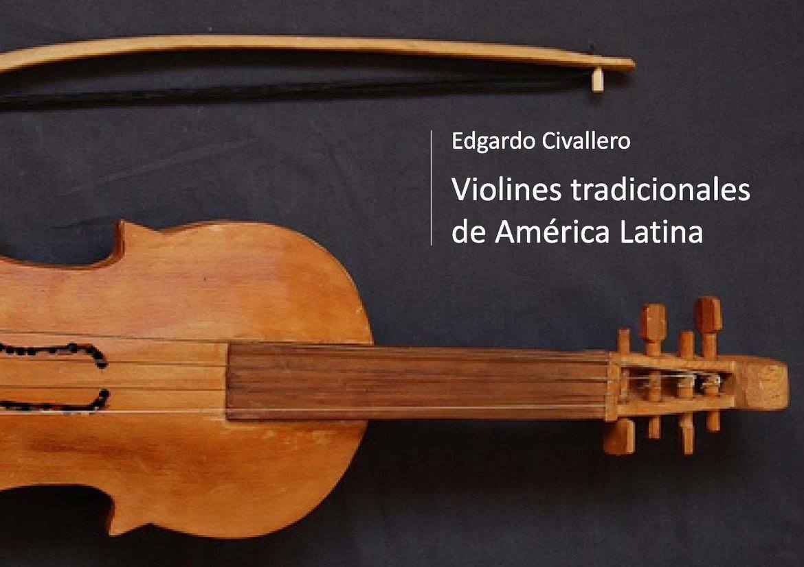

"Violines" tradicionales de América Latina. Parte 02: Chile y Bolivia
Inicio > Libros digitales sobre música > "Violines" tradicionales de América Latina. Parte 02: Chile y Bolivia
Cómo citar este trabajo: Civallero, Edgardo (2025). "Violines" tradicionales de América Latina. Parte 02: Chile y Bolivia. Edición de archivo. Bogotá: El Zorro de Abajo Editora.
Descargar en PDF.
Este libro continúa la exploración iniciada en el volumen anterior, ampliando el estudio de las cuerdas frotadas tradicionales hacia los Andes centrales y meridionales. El texto ofrece una mirada integral sobre los procesos de adopción, reinterpretación y resignificación del violín en contextos rurales, indígenas y mestizos, mostrando cómo este instrumento, originalmente europeo, se transformó en una voz profundamente americana. A partir de una extensa base documental y de observaciones de campo, se reconstruyen las trayectorias materiales y simbólicas que vinculan el sonido del arco con las cosmologías, los rituales y las prácticas sociales de comunidades campesinas, criollas y originarias.
En Chile, el violín llegó con la colonización y fue rápidamente incorporado al universo sonoro rural. Su presencia se documenta desde el siglo XVII, cuando formaba parte de orquestas domésticas y celebraciones populares. Se describen los violines construidos artesanalmente con maderas locales —alerce, coihue, notro o ciprés— que, por sus características estructurales, generan un timbre más plano, opaco y cálido que el europeo. En el sur, especialmente en Chiloé, el instrumento adquirió un papel protagónico en los rituales y fiestas comunitarias. El llamado "violín chilote", heredero de los ejemplares introducidos por los jesuitas, se asoció a danzas como la pericona, el cielito y la refalosa, y se convirtió en símbolo de sociabilidad insular. Se rescatan testimonios que relatan su participación en velorios, ceremonias religiosas y celebraciones familiares, donde el violín no solo acompañaba el canto, sino que también convocaba a la comunidad entera a bailar y compartir.
El texto examina también el rabel chileno, instrumento pastoril de tres cuerdas que tuvo una notable difusión entre los siglos XVIII y XIX. Construido con materiales modestos —maderas blandas, cuerdas de tripa o crin, arcos rudimentarios—, fue empleado para acompañar romances y tonadas campesinas, en especial el canto a lo poeta. Su sonido, más seco y áspero, era considerado adecuado para las décimas y payas, géneros narrativos que mezclaban devoción y sátira. El rabel sobrevivió con fuerza en las regiones de Maule y Colchagua y, aunque casi desaparecido en el siglo XX, hoy vive un proceso de recuperación gracias a investigadores y músicos tradicionales. Se destaca el trabajo de luthiers contemporáneos que reconstruyen sus formas a partir de ejemplares conservados en museos y colecciones familiares, así como el interés reciente por reinsertar el rabel en la música campesina chilena.
En el caso boliviano, se describe una extraordinaria diversidad de violines, producto de la interacción entre misiones religiosas, culturas locales y tradiciones mestizas. En las tierras altas, el violín chicheño y el vallegrandino se fabrican artesanalmente con maderas de cedro, quina quina o algarrobo, y conservan técnicas constructivas rudimentarias. El primero, pequeño y de timbre agudo, se emplea en fiestas rurales, especialmente en los taquipayanakus; el segundo, tallado en un solo bloque y sellado con resina vegetal, se utiliza en celebraciones agrícolas y religiosas. En ambos casos, el instrumento está ligado a calendarios rituales que regulan su ejecución: no puede tocarse fuera de los periodos sagrados sin provocar desequilibrio o desgracia.
En las tierras bajas, se documentan los violines de los Guarayo, Chiquitano, Mojeño, Mosetén y Cavineño, herederos de la experiencia misional jesuítica. Los Guarayo distinguen tres variantes: el yata miöri, el takuar miöri y una versión litúrgica de influencia europea. Construidos con caña takuara, madera y resinas naturales, estos instrumentos acompañan carnavales, procesiones y velorios, y su ejecución, tradicionalmente masculina, está rodeada de tabúes y restricciones. En las reducciones chiquitanas y mojeñas, el violín fue integrado a las orquestas religiosas junto al órgano y las flautas, formando parte de un repertorio barroco que perdura hasta hoy en la Ichapekene Piesta de San Ignacio de Moxos, declarada Patrimonio Inmaterial de la Humanidad. Se describen con detalle los procesos de transmisión artesanal, las afinaciones propias y los repertorios híbridos en los que lo europeo y lo indígena se entrelazan sin jerarquías.
El texto indica que el violín chapaco de Tarija, quizá el más emblemático del país, sintetiza esta mezcla. De tamaño menor al estándar, se construye con maderas locales y cuerdas metálicas o de tripa, y se toca con un arco corto de crin. Es un instrumento profundamente ritual, cuya ejecución está prohibida fuera del periodo comprendido entre el entierro del Carnaval y la Fiesta de la Cruz. Durante esas semanas, el violín acompaña procesiones, rezos y danzas de fertilidad, siendo considerado un mediador entre lo humano y lo divino. El violín chaqueño, de Santa Cruz, comparte muchas de sus características pero se distingue por su sonoridad brillante y su participación en danzas como la chacarera, el gato o el zapateado rural.
Lejos de ser un artefacto importado, el violín se convirtió en un objeto de apropiación creativa, profundamente imbricado en las estructuras rituales, los ritmos de la vida campesina y las concepciones sonoras indígenas. En Chile y Bolivia, el instrumento ya no pertenece al canon europeo: es una voz local, reconstruida con maderas, resinas y cuerdas del territorio, y dotada de funciones que trascienden lo musical para incluir lo social, lo espiritual y lo ecológico.
El latinoamericano no puede entenderse como una mera copia, sino como un nuevo ser acústico, mestizo y plural, que refleja los procesos de resistencia y reinvención cultural del continente. En la cuerda frotada de los campesinos del Maule, de los músicos de las misiones chiquitanas o de los ritualistas de Tarija resuena una memoria colectiva: una historia de intercambios y persistencias que convierte cada nota en un acto de supervivencia cultural.